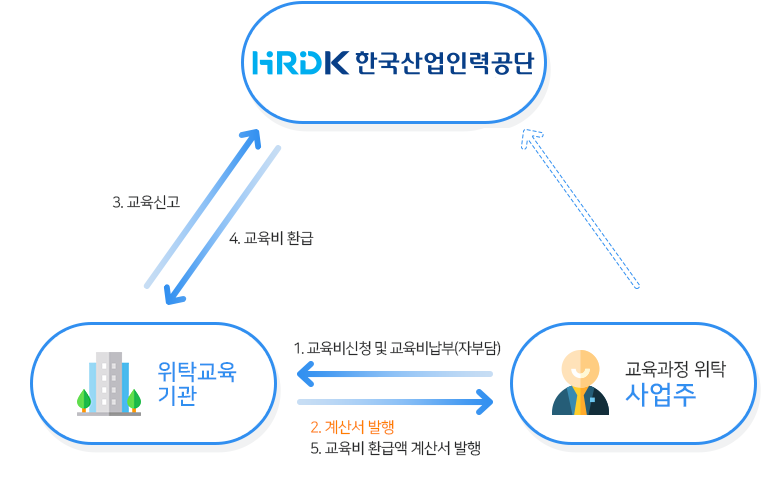

고용보험환급과정
고용보험 가입 사업주가 인정받은 훈련과정에 대한 훈련비용을 부담하여 재직근로자 등을 대상으로 훈련을 실시한 경우 소정의 훈련비용을 지원
지원한도 (고용보험법 시행령 제42조)
개념
고용보험 재정의 건전성 및 사업주 훈련 실시의 적정성 확보를 위하여 연간 사업주가 받을 수 있는 직업능력개발 훈련비용의 총액을 제한
지원 한도 금액
고용보험법 시행령 제42조제3항 및 사업주훈련 규정 제22조
사업주가「보험료징수법」에 따라 해당 연도에 내야 할 고용안정 · 직업능력개발 사업의 개산 보험료 및 특례보험료의 100분의 100
우선지원대상기업의 경우에는 100분의 240에 해당하는 금액
비용지원 한도 최소금액(500만원)에 미달하는 경우에는 500만원까지 지원
다만, 「고용보험법」제35조에 따라 지원 · 융자 제한의 행정처분을 받은 사업주에 대해서는 그 처분의 효력이 끝나는 보험연도부터 3년간 비용지원한도 최소 금액은 개산 보험료의 240%에 해당하는 금액
지원 한도 기준
사업주에게 지원되는 직업능력개발 훈련비용의 지원한도는 그 사업주가 훈련실시 시작일 해당 연도에 납부하여야 할 직업능력개발사업 개산보험료를 기준으로 함
따라서, 대규모(우선지원)기업으로 적용을 받던 사업주가 익년도에 확정 정산 등의 결과로 우선지원(대규모)기업으로 변경되었다 할지라도, 이는 확정보험료가 변경된 경우이며, 해당 연도에 납부하여야 하는 개산보험료로 볼 수는 없으므로 훈련비용의 지원한도는 변경 되지 않음
다만, 해당 연도 중에 개산보험료에 대하여 증가 또는 감액신청을 하여 납부 또는 감액 조정통지를 받은 경우에는 동 개산보험료 및 사업규모를 기준으로 훈련비용 지원이 변경될 수 있음
훈련실시 기간이 2개 년도에 거쳐 실시되는 경우에는 훈련이 실시된 해당 연도의 지원한도 내에서만 비용지원 가능
비용지원 한도의 예외
「고용보험법 시행령」 제42조제2항,제4항
다른 사업에 고용된 근로자를 대상으로 훈련과정을 인정받아 훈련을 실시할 경우 고용안정 · 직업능력개발사업의 개산보험료의 80%까지 추가 지원
양성훈련 지원금 및 유급휴가훈련의 임금의 일부는 지원한도적용에서 제외
환급절차

비용지원신청서 구비서류
지원금 신청일
훈련종료 후 또는 매 3개월 간의 훈련실시 후 30일 이내
훈련비용 신청 소멸시효는 훈련종료일로부터 3년
신청방법
온라인(HRD-Net)으로 신청 또는 오프라인(방문, 우편, 팩스 등) 서류 제출
온라인 신청 시 지원금 별 증빙서류 스캔 첨부
오프라인 신청 시 훈련비용지원신청서와 수료자명단, 지원금 별 증빙서류제출
부정훈련방지 운영기준
부정훈련이란
타인의 훈련과정을 대신 수강하거나, 평가를 대신 치루는것을 의미합니다.
부정훈련방지안내
자사는 부정훈련에 대해 철저히 관리하고 있습니다.
부정훈련이 적발되어 수료할 수 없을 시 어떠한 경우도 책임지지 않습니다.
부정훈련 적발시
1. 부정훈련이 적발된 경우 해당 수강생은 진도율 및 평가점수에 상관없이 미수료 처리됩니다.
2. 부정훈련 적발시 재시험은 없습니다.
3. 부정훈련 적발시 수료점수에 상관없이 미수료로 처리됩니다.
부정훈련 적발기준
1. 연속된 시간에 동일 IP, 동일 PC정보에서 평가 제출시
2. 접속자의 FDS 정보가 동일한 경우
3. 사업자정보가 다르지만 동일한 IP에서 수강시
4. 사업자정보가 다르지만 동일한 IP에서 평가시
위 항목 중 일치 했을 시 부정훈련으로 판단, 부정훈련 검출 프로그램을 통한 부정훈련 추출 진행
부정훈련 예방 방법
1. 학습자 공지
교육시작시 안내문을 통해 부정훈련에 관한 내용을 공지합니다.
2. 부정훈련 관리
부정훈련관련 모듈에서 부정훈련IP를 수시로 확인 합니다.
3. 부정훈련 모니터링
1일1회 본인인증 및 산업인력공단 모니터링 프로그램 설치를 통해 확인 합니다.
4. 부정훈련 신고센터
1811-9530 전화응대 및 1:1 익명 게시판을 통해 부정훈련 신고를 받고 있습니다.
부정훈련의 처벌
1. 부정훈련 적발시 사업주 뿐만 아니라 교육기관, 훈련생 모두 처벌을 받습니다.
2. 부정훈련 적발시 위탁기관은 고용보험상의 정부지원을 받을 수 없습니다.